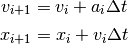
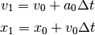
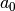
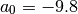
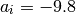

Simulación del movimiento de caída de una bola¶
En esta sección vamos a simular la caída vertical de una bola desde una altura dada hasta que golpea el suelo y vuelve a subir debido al golpe. Como dijimos en la sección anterior, para llevar a cabo esta simulación lo único que necesitamos son las ecuaciones del método de Euler:
(1)
Por ejemplo, con ellas podemos calcular la primera posición que va a tener el
objeto haciendo  , con lo que tenemos
, con lo que tenemos

Los valores de  y
y  no pueden obtenerse a partir del
método, sino que deben ser definidos por el usuario antes de empezar la
simulación. Éstos corresponden a la velocidad y la posición iniciales de la
bola, respectivamente. Para nuestro caso vamos a asumir que:
no pueden obtenerse a partir del
método, sino que deben ser definidos por el usuario antes de empezar la
simulación. Éstos corresponden a la velocidad y la posición iniciales de la
bola, respectivamente. Para nuestro caso vamos a asumir que:

lo que quiere decir que la bola se deja caer sin velocidad desde una altura de 10 m.
Por su parte, el valor de  es la aceleración que experimenta la bola durante su recorrido, que es igual al valor de la gravedad, es decir que

Si la distancia desde la cual se deja caer el objeto no es muy grande, este
valor se puede asumir como constante durante todo el recorrido, es decir que
para cualquier valor de  siempre se va a tener que
siempre se va a tener que

Con estos valores y las ecuaciones del método de Euler, podemos desarrollar un programa en Python que realice la simulación.
Código en Python¶
Para programar el código en Python vamos a seguir estos pasos:
Definir las siguientes constantes, que nos van a servir para guardar los valores necesarios para correr la simulación:
r = 1 # Para el radio de la bola x0 = 10 # Para la posición inicial v0 = 0 # Para la velocidad inicial t0 = 0 # Para el tiempo inicial. g = -9.8 # Para la aceleración de la gravedad. T = 10 # para el tiempo total de la simulación en segundos dt = 0.1 # Para el intervalo de tiempo
Nota
El valor que se le asigne a esta última variable debe ser pequeño, pero no tanto como para que la simulación se demore mucho tiempo en correr. Por ejemplo, si se elige:
dt = 1
quiere decir que la simulación avanza en pasos de 1 segundo.
Definir tres listas: posiciones, velocidades y tiempos, para guardar los valores de posición, velocidad y tiempo, respectivamente, que se vayan calculando con el método de Euler. Hacer que estas listas contengan como primer elemento los valores de x0, v0 y t0, respectivamente.
Determinar el número de pasos que se van a calcular con el método de Euler como:
n = int(round(T/dt))
Usar un ciclo for que vaya desde 0 hasta n para calcular las nuevas velocidades y posiciones que va tomando la bola en su caída con las ecuaciones de Euler (1).
- Dentro de este ciclo incluir un if para determinar el momento en que la bola toca el suelo. En ese instante se hace que la bola cambie su velocidad del valor que tiene a su valor opuesto. Esto provocará que rebote contra el suelo y vuelva a subir debido a ello.
- Después de este condicional, guardar los valores obtenidos en las listas de posiciones, velocidades y tiempos.
Finalmente, imprimir la lista de posiciones por fuera de este ciclo for, para ver si todo está funcionando correctamente.
Una vez realizadas la simulación, pueden usarse otras librerías para generar una animación de la misma, como veremos a continuación.